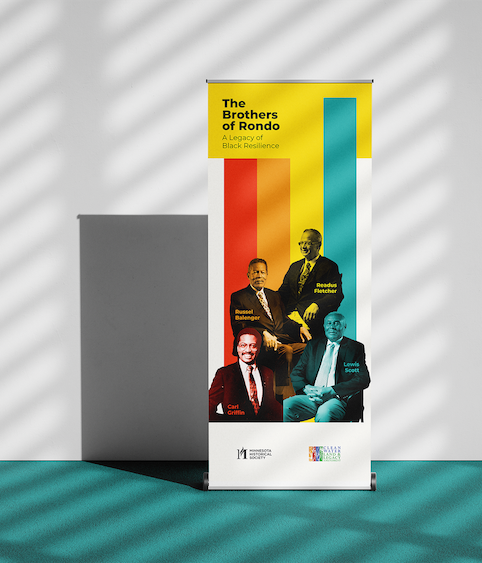
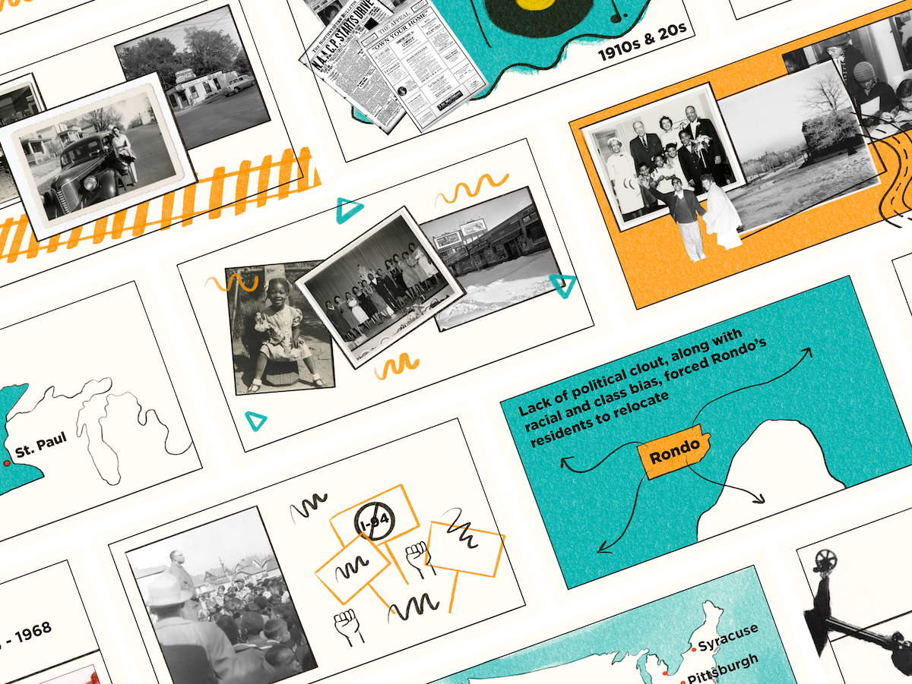

Poster & Banner
I was also asked to create the poster and retractable banner for the documentary premiere at Minnesota Historical Society.


Procreate - Adobe Photoshop - InDesign
I was asked to create the storyboard illustrations, poster, and banner for the film, The Brothers of Rondo. The film was directed by Francis Sampah and hosted by Minnesota Historical Society.
The film chronicles the life stories of four men -- Lewis Scott, Russel T. Balenger, Readus W. Fletcher, Carl Griffin -- who grew up in the Rondo neighborhood of Saint Paul, enrolled at Minnesota State University Moorhead, and went on to become leaders in their respective areas of work and study. Their stories demonstrate the importance of Black culture and community, and how the Rondo neighborhood -- and its destruction for the construction of I-94 -- were instrumental in laying a foundation of resilience in their lives. In the face of displacement, racism and economic adversity, the Brothers channeled lessons learned in Rondo to make a profound impact in their careers, communities, and the state of Minnesota.

I was also asked to create the poster and retractable banner for the documentary premiere at Minnesota Historical Society.
